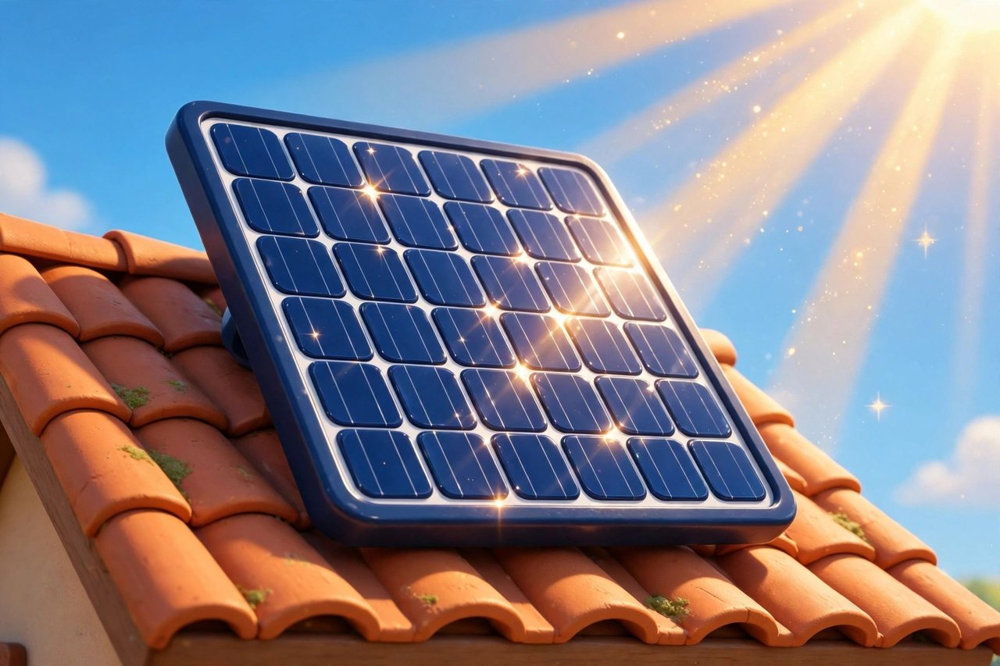

Unit 5 · Global Warming — Lesson 2: Language · Grade 11 · Extra Class (B1–B2)
Form: Past participle (V-ed / V3) + … , main clause. The clause has a passive meaning — the subject receives the action.
• Grown in the school nursery, the young trees were strong and healthy. (= The trees were grown in the school nursery.)
• Planted along the fence, the trees will clean the air.
Time: Watered every week, the young trees will grow quickly. (= When they are watered every week…)
Reason: Damaged by the heatwave, many trees in the park died. (= Because they were damaged by the heatwave…)
✂️ Shorter passive sentences: we can drop when / because + be: When the panels are installed on the roof → Installed on the roof, the panels will save energy.
⚠️ The participle clause and the main clause must have the SAME subject. Compare with Lesson 1: Burning fossil fuels… (active) ≠ Burnt in factories… (passive).
Last Saturday, Green Star High School held a Tree-Planting Day. In the morning, 120 students gathered in the school yard, all wearing navy blue polo shirts. Fifty young trees were waiting for them near the fence. Grown in the school nursery, the trees were strong and healthy. Linh and Nam's teacher said, "Planted with care, these trees will clean our air and give us cool shade."
Linh and Nam worked as a team. Nam dug deep holes with a spade, and Linh held each tree straight, put soil around its roots and watered it well. Together, they planted six trees along the school fence. At midday, every class put small wooden name signs on their trees. Their teacher explained that trees absorb carbon dioxide from the atmosphere, so they help to slow down global warming and lower the temperature around the school.
In the afternoon, the students took a group photo under the new solar panels on the school roof. Tired but happy, Linh and Nam promised to water their trees every week. "Watered every week, our trees will grow tall and strong," Nam said. For Linh and Nam, the Tree-Planting Day was a small action with a big consequence: a greener school and a cooler planet.
PART 1 — Complete the form: GREEN WEEK at Green Star High School — Event Information
PART 2 — True or False?

Useful language: Our school held a tree-planting day to fight global warming. · Grown in the school nursery, the young trees were strong. · Planted along the fence, the trees will give us shade. · We worked in teams to dig holes and water the trees. · Watered every week, the trees will grow quickly. · I felt tired but proud.
A: Did your school have a tree-planting day?
B: Yes. Last Saturday, 120 students planted fifty trees at Green Star High School.
A: What did you do?
B: I dug holes while my friend held the trees and watered them. Planted along the fence, the trees will clean the air.
A: How did you feel?
B: Tired but happy. Watered every week, our trees will grow tall and strong.
Sentence starters: Last Saturday, our school held a Tree-Planting Day to… · Grown in…, the young trees were… · My friend and I planted… · Planted along…, the trees will… · Watered every week, they will… · I felt… because…
Useful language: gather in the school yard · dig holes · hold the tree straight · put soil around the roots · absorb carbon dioxide · slow down global warming · give cool shade · a greener school
Last Saturday, our school held a Tree-Planting Day to make Green Star High School greener. In the morning, 120 students gathered in the school yard. Grown in the school nursery, the fifty young trees were strong and healthy. My friend Nam dug deep holes, and I held each tree straight and watered it. Planted along the fence, the trees will absorb carbon dioxide and give us cool shade. Watered every week, they will grow tall and strong. I felt tired but very proud.
Take a photo/screenshot of your report card and send it to your teacher!
| Part | Score |
|---|---|
| Warmer game (Lesson 1) | – |
| Vocabulary — Matching | – |
| Vocabulary — Gap-fill | – |
| Grammar check | – |
| Video check — Order the events | – |
| Video check — True / False | – |
| Reading | – |
| Listening — Form completion | – |
| Listening — True / False | – |
| Homework A — Vocabulary | – |
| Homework B — Past participle clauses | – |
| Homework C — The story | – |